🎭 VNモード
ビジュアルノベル風の立ち絵表示で、セッションの雰囲気を盛り上げます。
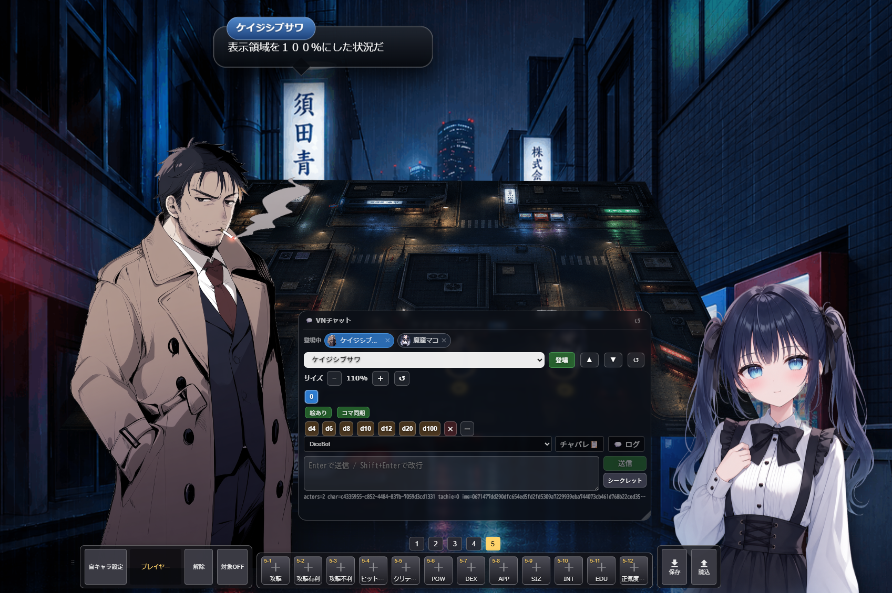
VNモードとは
テーブル上部にビジュアルノベル風の立ち絵エリアを表示する機能です。キャラクターの立ち絵が並び、チャット送信時に吹き出しが表示されます。
- キャラクターの立ち絵を並べて表示
- チャット送信時に吹き出し演出
- 立ち絵の差分画像にワンクリックで変更
- キャラごとのサイズ調整で身長差を表現
- チャットパレットと連携してワンクリック発言
- シークレット送信（GM向け）
- ダイスボットもVNモード内から直接操作可能
VNモードを有効にする
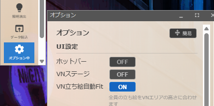
- 画面左のオプションパネル（歯車アイコン）を開く
- 上部の「VN」ボタンをクリック
- テーブル上部にVNステージが表示されます
もう一度クリックするとOFFになります。設定はブラウザに保存されるため、次回以降も同じ状態が維持されます。
キャラクターを登場させる
- VNステージ下部のコントロールパネルにある「キャラ選択」プルダウンからキャラクターを選ぶ
- 「登場」ボタンをクリック
- キャラクターがステージに登場し、立ち絵が表示されます
立ち絵が設定されていないキャラクターの場合は、名前だけが表示されます。登場中のキャラクターは下部の「登場中」エリアにアイコンで表示されます。✕ボタンで退場させることができます。
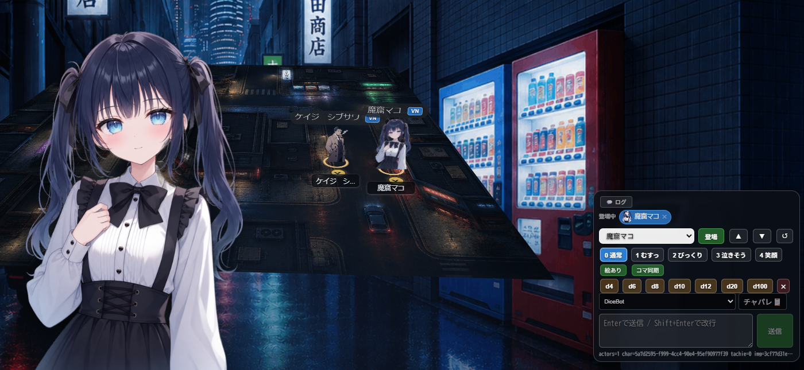
チャットを送る
- 「キャラ選択」で発言するキャラクターを選ぶ
- テキスト入力欄にメッセージを入力
- Enterで送信（Shift+Enterで改行）
送信すると、ステージ上のキャラクターの頭上に吹き出しが表示されます。
新パネル機能 v1.36
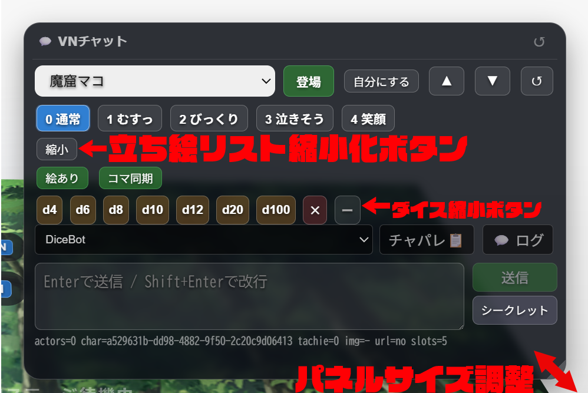
v1.36でVNチャットパネルが大幅に刷新しました。以下の機能が追加されています：
🔒 シークレット送信
- 送信ボタンの横に「シークレット」ボタンを追加
- ONにすると送信メッセージに
s:が自動付与され、シークレット発言として送信 - ON状態で送信、Enter、チャパレのダブルクリック送信すべてに適用
- 手動で
s:を付けた場合は二重付与なし - 全角
s：にも対応
🗜️ 立ち絵リスト縮小
- 「縮小」ボタンで差分画像一覧をコンパクト化
- 差分が12枚超えの場合は自動で縮小表示に切り替わる
- 縮小中は「展開」「ホバー」ボタンで切り替え可能
- 展開: パネル内に全差分を表示
- ホバー: 右側に独立パネルとして全差分を表示（小画像＋名前）
🎲 ダイス一覧縮小
- ダイス行の「−」ボタンでダイス一覧を縮小
- パネルのスペースを節約できます
📐 パネルサイズ変更・移動
- 右下ドラッグ: パネル右下をつかんでサイズ変更
- ヘッダードラッグ: パネルヘッダーをドラッグして好きな位置に移動
- 位置とサイズはブラウザに保存され、次回以降も維持
- チャパレ・チャットログパネルも同様に移動・リサイズ可能
📌 最前面固定
- チャパレ・チャットログに📌ピンボタンを追加
- ONにすると他のパネルより手前に固定される
立ち絵の差分切り替え
キャラクターの画像欄に複数の立ち絵を登録しておくと、表情をワンクリックで切り替えられます。
通常表示
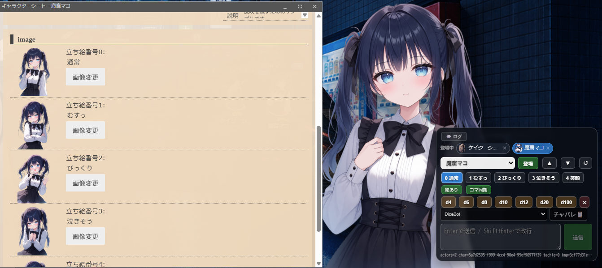
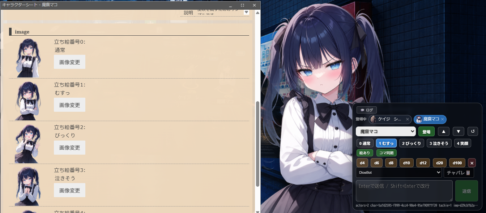
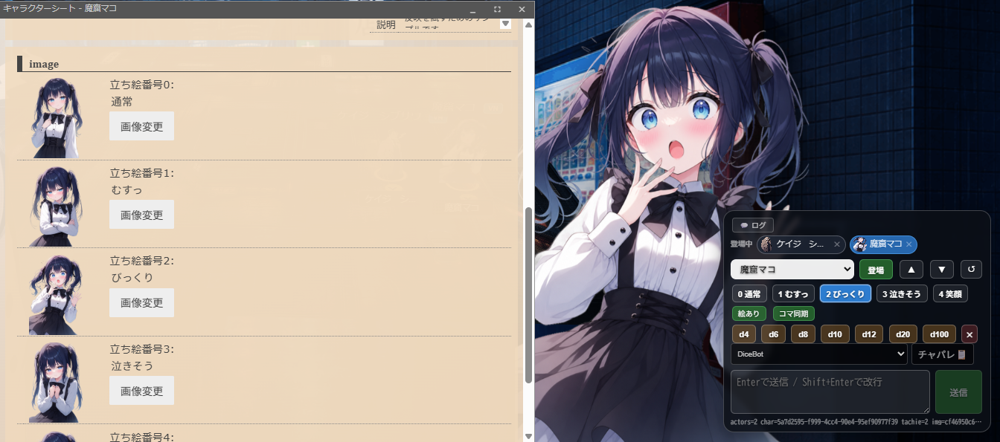
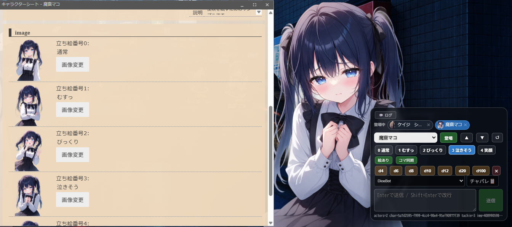
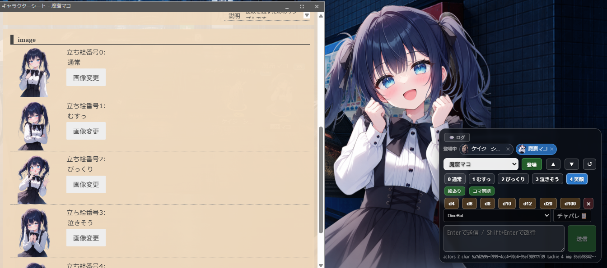
差分が多い場合の表示モード v1.36
差分画像が12枚を超える場合は自動的に縮小表示に切り替わります。また、任意で「縮小」ボタンから手動切替も可能です。
縮小表示中は以下の3つの操作モードが使えます：
- 展開: 従来通りパネル内に全差分を展開
- ホバー: 右側に独立パネルとして全差分を表示（小画像＋名前）
- 縮小: 現在の差分だけコンパクトに表示
ホバー別パネルはVNチャット内ではなく、完全に独立したフローティングパネルとして横に開きます。
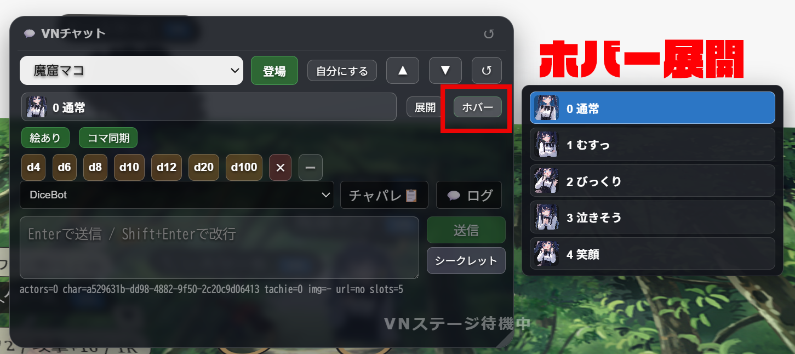
立ち絵サイズ調整 v1.36
キャラクターごとに立ち絵の表示サイズを 50%〜200% の範囲で調整できます。
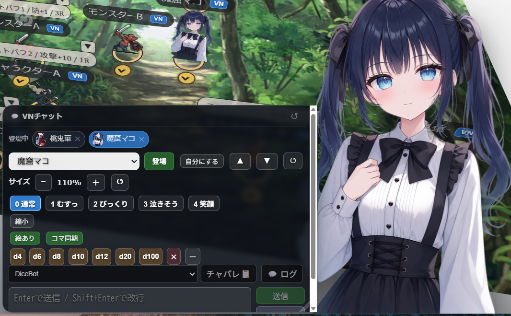
VNチャットパネルのキャラ操作部分にある「− 100% ＋」で調整：
- − / ＋: 5%刻みでサイズ変更（50%〜200%）
- ↺: 100%にリセット
- キャラごとにサイズが保存される
- 差分を切り替えてもサイズは維持
- 他プレイヤーにもサイズが同期される
身長差の表現に！ キャラのサイズを変えることで、大人と子供、巨人と小人などの体型差を表現できます。
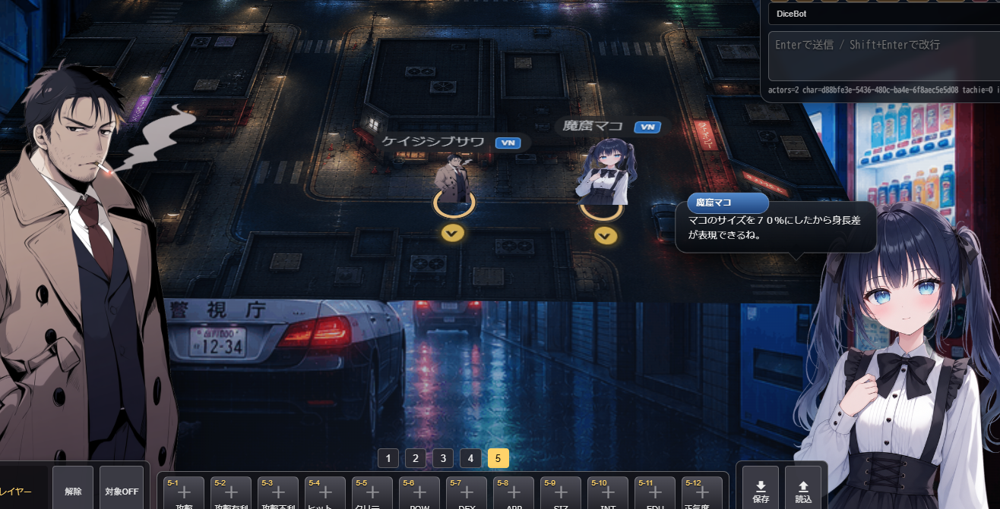
立ち絵の自由配置・リサイズ v1.37
v1.37より、VNステージ上の立ち絵を自由にドラッグ移動・8方向リサイズ・重なり順の操作ができるようになりました。画面サイズの異なるプレイヤー間でも位置がズレにくいよう、vw/vh相対座標で同期されます。
🖱️ 立ち絵をドラッグで自由移動
- VNチャットパネルのキャラ操作部分で「移動開始」ボタンをクリック
- 対象キャラの立ち絵に黄色い枠が表示され、ドラッグ移動が可能になる
- 画面上の立ち絵をそのままドラッグして好きな位置へ配置
- 「移動終了」ボタン（またはもう一度クリック）で移動モード解除
- 位置は他プレイヤーにもリアルタイムで同期
📐 8方向リサイズハンドル
- 移動モード中、立ち絵の四隅と四辺に8つのリサイズハンドルが表示
- ハンドルをドラッグして立ち絵を拡大・縮小
- アス比ロック: 🔒ボタンでアスペクト比を維持したままリサイズ（デフォルトON）
- 解除すれば自由な縦横比に変更可能
⬆⬇ 重なり順の操作
- ⬆ ボタン: 立ち絵を前面に（手前に配置）
- ⬇ ボタン: 立ち絵を背面に（奥に配置）
- キャラクターの前後関係を自由に表現できる
↺ 配置リセット
- 「↺」ボタンで位置・サイズ・重なり順をすべて初期値に戻す
演出の自由度が大幅UP！ キャラクターを画面中央に大きく配置したり、脇に小さく配置したり、重なりを活かした演出が可能です。位置とサイズは画面サイズに依存しないvw/vh単位で同期されるため、異なる環境のプレイヤー間でも見え方が近くなります。
VNステージの高さ設定 v1.36
オプション → 「UI設定」→「高さ設定」で、VNステージの立ち絵エリアの高さを調整できます。
- 範囲: 25%〜100%
- 青い範囲プレビューで現在の高さを視覚的に確認
- 「標準」ボタンで58%、「最大」ボタンで100%に一括設定
- 設定はブラウザに保存
VNステージをめいっぱい使いたい時は100%に。盤面を広く見せたい時は低めに設定しましょう。
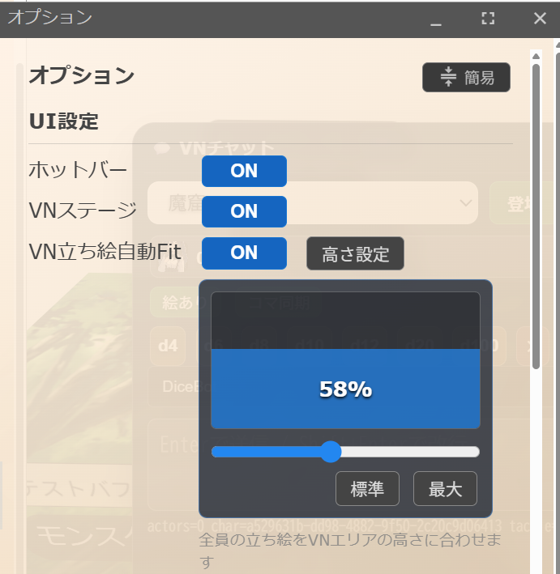
吹き出しの仕組み
チャットを送ると、発言キャラクターの頭上に吹き出しが表示されます。
- 名前プレート: キャラクター名が表示されます
- タイプライター演出: 文字が1文字ずつ表示されます
- 位置: 左側のキャラは右向き、右側のキャラは左向きに吹き出しが出ます
- 新しい発言があると、前の吹き出しは消えて新しいものに切り替わります
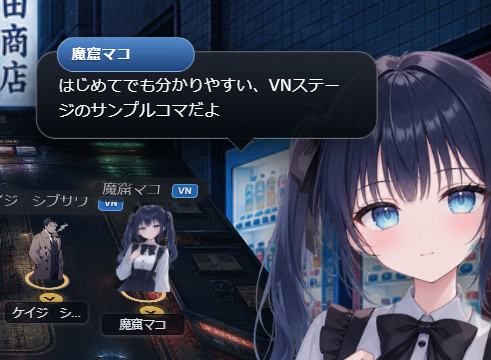
チャットパレット連携
キャラクターにチャットパレットが設定されている場合、VNモード内から直接使えます。「チャパレ」ボタンを押すと、独立したフローティングパネルとして開きます。
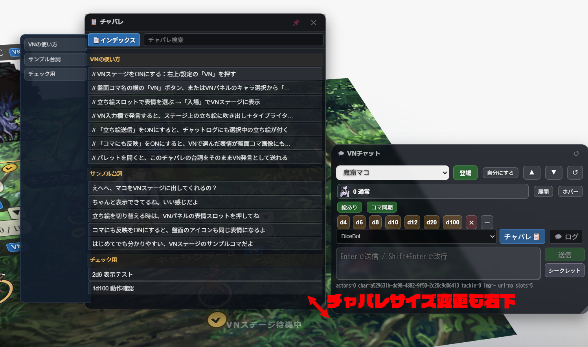
便利な機能
- 検索: パレット内の行をキーワードで絞り込み
- インデックス: 左側にセクション見出しのナビゲーションを表示（📑ボタンでON/OFF）
- セクション表示:
// 見出し形式の行はセクションヘッダーとして表示 - ダブルクリック送信: パレット行をダブルクリックで即座にVN発言
- リサイズ: パネル右下をドラッグしてサイズ変更可能
- ドラッグ移動: パネルヘッダーをドラッグして好きな位置に移動
- 最前面固定: 📌ピンボタンで他パネルより手前に固定
チャットログ
「ログ」ボタンを押すと、独立したフローティングパネルとしてチャットログが開きます。
- チャットタブを切り替えて、目的のログを表示
- 📌 ピン留め: ログ表示を最前面に固定
- ドラッグ移動・リサイズ: パネルヘッダーで移動、右下でサイズ変更
- シークレット発言は🔒アイコン付きで表示
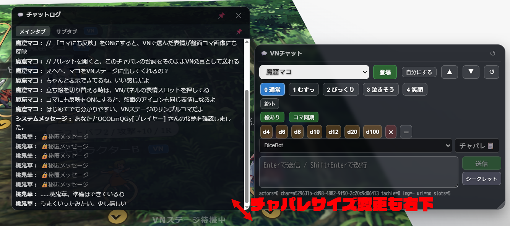
ダイスロール
VNモード内からダイスを振ることができます。
- ダイスボタン: D4, D6, D8, D10, D12, D20, D100 の各ボタンをクリックでダイスを追加
- 複数クリックでダイスを追加（例: D6を3回クリック → 3D6）
- ✕ボタンでダイスをリセット
- ダイスボット選択: プルダウンからゲームシステムを選択すると、BCDiceによるダイスボットが使えます
- ダイス縮小: −ボタンでダイス行をコンパクト化
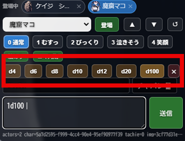
コマ同期
VNモードの設定で、盤面のコマと連動できます。
- 絵あり/絵なし: ON=立ち絵付きでチャット送信 / OFF=テキストのみ
- コマ同期/コマ独立: ON=VNモードで選択した立ち絵が盤面のコマ画像にも反映 / OFF=盤面コマに影響しない
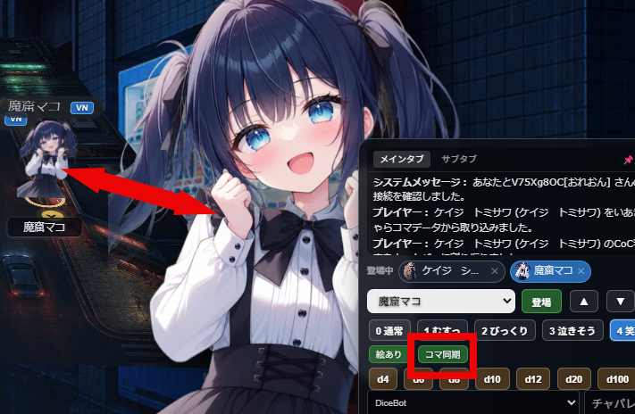
コマからVNパネルを逆引き 便利機能
オプションの「盤面コマVNボタン」をONにすると、盤面のコマにVNボタンが表示されます。これをクリックするだけで、そのキャラクターのVNパネルに即座に切り替わります。
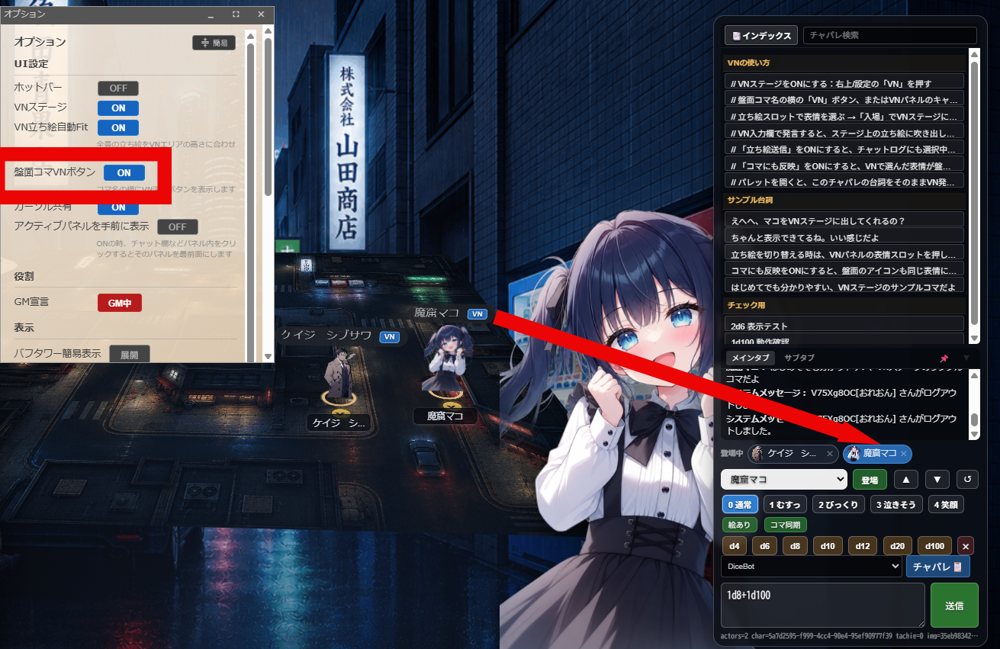
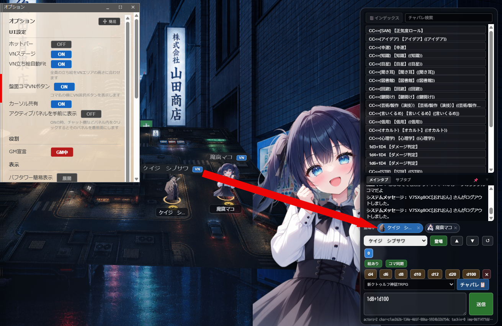
✨ これの何がすごい？
複数のキャラクターやNPCを扱うとき、これまではそれぞれのキャラクターシートを開いてチャットパレットを切り替える必要がありました。
コマのVNボタンから逆引きすると、立ち絵の選択だけでなくチャットパレットも同期して切り替わるため、チャットパレットウィンドウが1つだけで済みます。1クリックでキャラクターを切り替えて、すぐに発言可能！
立ち位置の調整
- ▲ / ▼: 立ち絵全体の上下位置を微調整
- ↺: 位置をリセット
- ドラッグ&ドロップ: 登場中のキャラクターアイコンをドラッグして、立ち位置の順番を入れ替え可能
v1.37以降は「移動開始」ボタンで立ち絵を画面上の好きな位置にフリードラッグできます。詳しくは立ち絵の自由配置・リサイズを参照。
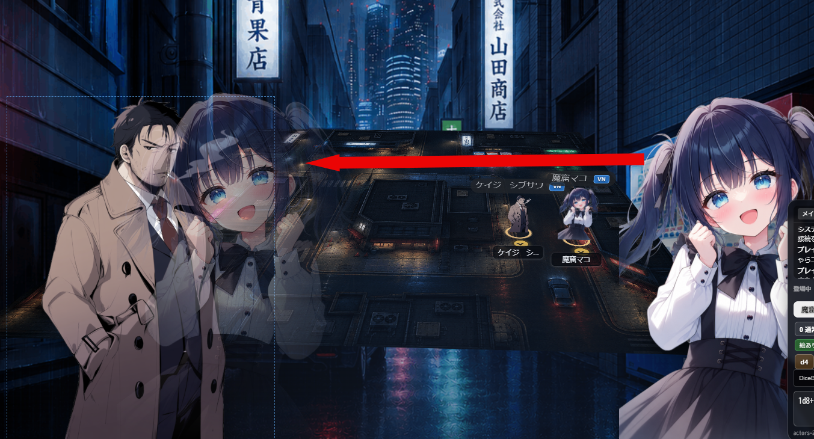
Tips
- 🔄 後から入室したプレイヤーにも、自動で立ち絵が同期されます
- 💾 VNモードをOFFにしてからONに戻しても、登場状態は保持されます
- 🗑️ テーブル右上の「×」ボタンでステージを空にできます（全キャラ退場）
- 👤 アドバンスモードの部屋では「自分のコマ」ボタンが表示され、選択中キャラを自分のコマとして設定できます
- 🎨 立ち絵サイズはキャラごとに保存されるので、セッションをまたいでも維持されます
- 📐 VNステージ高さは「めいっぱい使いたい人」向けに100%まで拡張可能
- ↩️ オプションの「ホットバーを初期位置に戻す」「VN UIを初期位置に戻す」ボタンで、パネル配置をリセット可能 v1.37
- 📐 立ち絵の位置・サイズ・重なり順は他プレイヤーとリアルタイム同期 v1.37